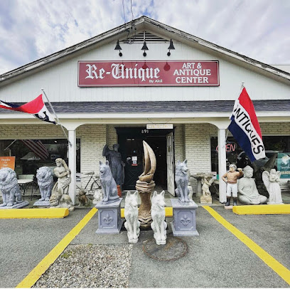
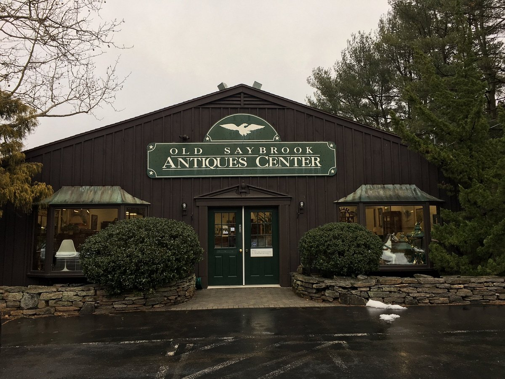

Top 10 Tourist Attractions in Old Saybrook: Katharine Hepburn Cultural Arts Center and Museum Harvey's Beach General William Hart House The Trove Tova's Vintage Shop Fort Saybrook Monument Park Re-Unique Antiques  Old Saybrook Antiques Center  30 Mile Brewing Co. Essex Saybrook Antiques Village